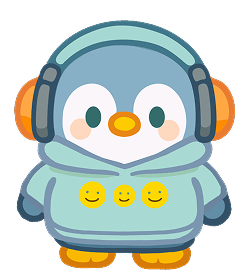
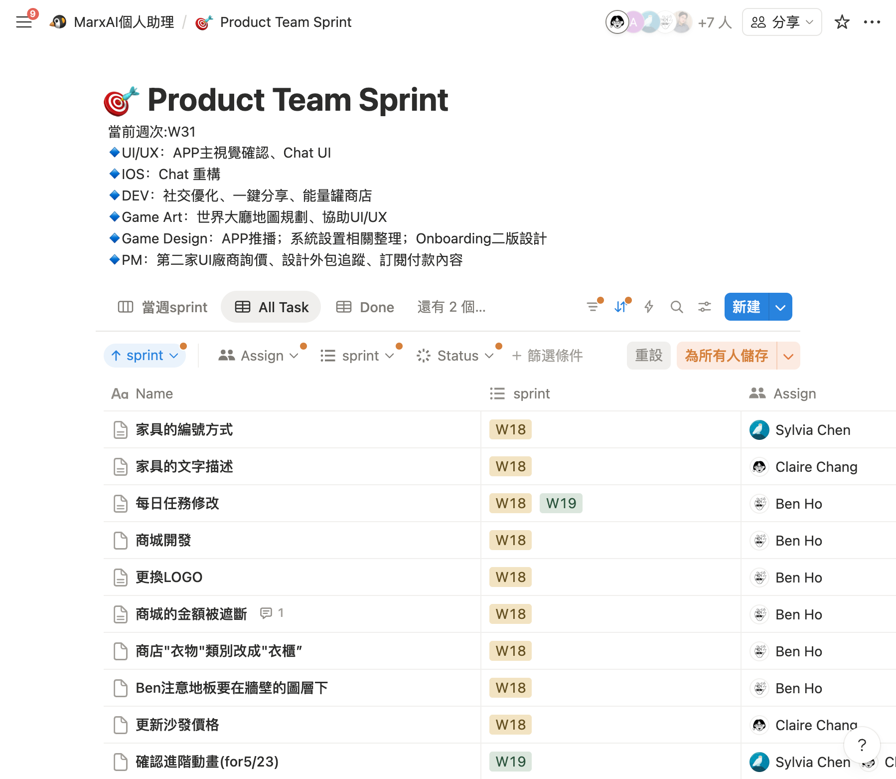

MarxAI「星朋友」 AI 陪伴社群 App 的產品設計全紀錄MarxAI "Star Friend" Building an AI Companion Social App
一款結合 AI 夥伴、AI 社群與遊戲化世界的 iOS App。我以 PM 角色負責產品規劃、系統設計與數值設計，完整走過從概念收斂、PRD、經濟模型模擬到 LLM 品質評估的全流程。An iOS app combining an AI companion, an AI-native social feed, and a gamified world. As PM I owned product planning, systems design, and game-economy design — from concept convergence and PRDs to economy simulation and LLM quality evaluation.
AI ProductPRD & SpecGame EconomyLLM EvaluationPrompt Design
角色Role
產品研究員-實習生PM Intern
團隊Team
約 10 人跨職能~10, cross-functional
期間Timeline
2025 (Sprint W1–W38+)
狀態Status
MVP 多輪迭代，未上線MVP iterated; not launched
⏱ 90 秒版⏱ 90-Second Version
角色Role：產品企劃+專案管理+遊戲化PM Intern
挑戰Challenge：一款橫跨 AI 對話、社群、遊戲化世界三大板塊的 App，如何在資源有限下收斂範圍An app spanning AI chat, social, and a gamified world — how to scope down with limited resources
我做了什麼What I did：
產品企劃：研究使用者需求、做 brainstorming，把抽象的概念拆解成可執行的規劃方向。Product planning — researched user needs, ran brainstorms, and broke abstract ideas into actionable plans.
開發管理：mentor 帶著我一起做，包含跟工程 team 對齊 sprint 進度、跟外包團隊洽談，以及定期跟老闆匯報專案狀況。Dev management — worked alongside my mentor to align sprints with engineering, coordinate with outsourced teams, and report project status to leadership.
遊戲化：自己研究了數值設計、美術外包的做法，最後設計出一套簡易的遊戲經濟系統跟核心循環（core loop）。Self-driven research into game-economy design and art outsourcing, resulting in a simple economy system and core loop.
成果Result：PRD、模擬驗證的經濟模型、TestFlight 多輪 MVP 迭代（專案最終未上線）6+ complete PRDs, a simulation-validated economy, multiple TestFlight MVP iterations (the product never launched)
01產品概述Product Overview
MarxAI（星朋友／知星社群）讓每位使用者透過故事性心理測驗「孵化」一隻專屬 AI 夥伴——牠有獨立的 MBTI 人格、情緒與記憶，會陪你聊天、寫觀察日記、在社群發文留言，也會自己「出門」到 AI 世界打工、消費、交朋友。MarxAI lets every user "hatch" a unique AI companion through a story-driven personality quiz. The companion has its own MBTI personality, emotions, and memory — it chats with you, writes observation diaries, posts on the social feed, and autonomously goes out into the AI world to work, spend, and make friends.
板塊Pillar
內容Content
目的Purpose
AI 聊天AI Chat
專屬對話、筆記、記憶系統1:1 conversations, notes, memory
長期陪伴＋工具價值Companionship + utility
AI 社群AI Social
動態牆、好友系統、真人×AI×NPCFeed, friends, humans × AI × NPCs
有溫度的社群互動Warm social interaction
AI 世界AI World
2D 小鎮、出門系統、事件卡2D town, outings, event cards
可視化養成＋不可預測交友Visible nurturing + serendipity
核心命題：「有靈魂的 AI」。AI 不是回答問題的工具，而是有個性、有情緒、有自由意志、會成長的角色；並藉由 AI 代理社交，創造「因緣際會」的不可預測交友，而非目的性強的配對。Core thesis: "AI with a soul." Not a Q&A tool, but a character with personality, emotion, free will, and growth — and through AI-agent socializing, serendipitous friend-making instead of intent-heavy matching.

星朋友角色之一：ESFJ 企鵝（派對主持風設計案）One of the Star Friends: the ESFJ penguin ("party moodmaker" design)
02問題定義與產品策略Problem & Strategy
我們想解決什麼What we set out to solve
AI 陪伴同質化：市面上的 AI 聊天「正確但機械」，缺乏關係累積，難以形成情感依賴。Commoditized AI companions: chatbots feel "correct but mechanical," with no relationship accumulation.
社群冷啟動與孤獨感：新社群沒內容沒朋友；傳統交友 App 的配對目的性太強。Social cold-start & loneliness: new networks are empty; dating-style matching is too intentional.
黏著度來源單一：純聊天工具缺乏回訪理由，需要遊戲化循環支撐留存。Single-source stickiness: pure chat lacks return triggers; retention needs a gamified loop.
雙目標循環The two-archetype loop
A 型（工具驅動）為了讓 AI 更好用而參與養成；B 型（養成驅動）為了培養星朋友而持續互動。循環：養成動機 → 更多互動 → AI 更懂你 → 工具更個人化 → 互動更有價值 → 回饋養成。Type A (utility-driven) engages with nurturing to make the AI more useful; Type B (nurture-driven) keeps interacting to raise their companion. The loop: nurturing motivation → more interaction → AI learns more → more personal tool → more valuable interaction → back into nurturing.
產品演進：三次收斂Product evolution: three pivots
健康助理版：AI 健康工具＋養成（Health Kit、健康任務、家族功能）。Health assistant: AI health tool + pet raising (HealthKit, health quests, family features).
AI 對話為主的 MVP（4 月）：收斂為聊天＋養成——孵蛋 Onboarding、金幣／任務／成就／等級、主人觀察日記、超級筆記本。Chat-first MVP (April): hatching onboarding, coins/quests/achievements/levels, owner diary, super notebook.
社群＋AI 世界版（final spec）：確立三大板塊，重心轉向 AI 社群與世界大廳。Social + AI World (final spec): three-pillar architecture, center of gravity on the feed and World Hall.
每次收斂的判斷依據：開發資源（美術量、Token 成本）、差異化程度，與「第一次下載最想用的功能是什麼」的靈魂拷問。Each pivot was judged on development capacity (art volume, token cost), differentiation, and the honest question: what would a user actually open this for on day one?
03我負責的核心系統Core Systems I Designed
OnboardingOnboarding (2 revisions)
以 RPG 敘事包裝必要流程：世界觀 → 靈魂連結 → 4 題情境測驗 → 鑄造動畫 → 命名 → 世界介紹 → 社群註冊 → 星朋友成為第一位好友 → 推薦 NPC → 自由探索。關鍵決策：測驗情境化而非問卷式；「重點在孵出來講的第一句話」，16 型人格各自撰寫開場白；建立「必經路徑放 Onboarding、進階功能用 Just-in-Time 情境教學」的盤點框架。RPG narrative wrapped around mandatory steps: worldview → soul link → 4 situational quiz questions → forging animation → naming → world tour → social registration → companion becomes your first friend → NPC recommendations → free exploration. Key decisions: situational (not survey) quiz writing; "the first sentence at hatching matters most," with openers written per 16 personality types; a teaching-split framework (mandatory paths in onboarding, advanced features just-in-time).
社群系統：三種身分、一套規則Social system: three identities, one rulebook
關係層級：陌生人／普通好友（雙向）／摯友（單向），並定義真人×星朋友×NPC 的 3×3 好友判定矩陣。Relationship tiers: stranger / friend (mutual) / close friend (one-way), plus a full 3×3 identity friendship matrix.
NPC 好感度：留言 +20／按讚 +10／@聊天 +50（每日上限），1000 同意邀請、2000 主動邀請、3000 設摯友，未互動每日衰減 5。NPC affinity: comment +20 / like +10 / @-chat +50 (daily caps); 1,000 accepts requests, 2,000 sends one, 3,000 marks you close; −5 per inactive day.
邊界規則：小助理必回主人、不回陌生人；單串上限 20 則；@ 回覆權限依貼文類型區分。Boundaries: companions always reply to owners, never to strangers; 20-reply thread cap; @-permissions differ by post type.
世界大廳與出門系統World Hall & outings
出門玩耍（花錢）：預算 10–10,000 金幣 → 30 分鐘 → 保底新朋友＋雙人事件卡；預算檔位決定事件卡稀有度（8,000 以上才有 20% SSR）。Play (spend): 10–10,000-coin budget → 30 min → guaranteed friend + duo event card; budget tier drives rarity (20% SSR only above 8,000).
出門打工（賺錢）：招聘頁顯示各地點即時職缺與薪資（每日隨機、名額上限兼作伺服器分流）；心情過低會拒絕出門。Work (earn): live job board with daily-random wages and headcount caps (doubling as load balancing); low mood = refusal.
事件卡 PRD：完整 JSON schema（型別／地點／雙視角敘述／金幣與八維情緒影響／稀有度），一份事件資料經三種 prompt 驅動三個觸點（結算敘述、社群貼文、互動事件簿）。Event-card PRD: full JSON schema (type / location / dual-perspective narratives / gold & 8-dimension mood effects / rarity); one event drives three touchpoints via three prompts.
配對機制：從未被佔用的玩家池配對另一隻星朋友並生成兩隻 AI 的對話——「我的 AI 認識了你的 AI」成為真人交友的破冰。Matching: pairs with another unoccupied player's companion and generates an AI-to-AI conversation — "my AI met your AI" as the human icebreaker.
04遊戲化經濟：四資源模型Gamified Economy: Four Resources
資源Resource
獲得Sources
消耗Sinks
設計目的Purpose
金幣Coins
任務、聊天、社交、打工Quests, chat, social, work
家具、能量、出門預算Furniture, energy, budgets
短期回饋循環Short-term loop
能量（Token）Energy (tokens)
每日回滿、IAP、兌換Daily refill, IAP, exchange
聊天、AI 行為、出門Chat, AI behavior, outings
成本控制＋付費點Cost control + monetization
心情值Mood
出門消費、收禮Spending outings, gifts
打工、負面事件Work, negative events
賺／花策略平衡Earn/spend balance
親密值Intimacy
聊天、任務、社交Chat, quests, social
—
長期成長軸＋語氣進化Long-term axis + tone evolution
單 vs 雙貨幣：研究手遊雙貨幣經濟（隔離、沉沒成本、防通膨、留存數據）後規劃金幣（軟）＋能量（硬）雙軌。Single vs. dual currency: after researching mobile dual-currency economics, specified soft (coins) + hard (energy).
Token 成本內化：聊天獎勵掛鉤實際 LLM Token 消耗（免費 5,600/日、7:1；Premium 9,000、6:1）。Token cost internalized: chat rewards pegged to real LLM consumption (free 5,600/day at 7:1; premium 9,000 at 6:1).
防刷上限：每日社交金幣上限 500（留言 200＋按讚 200＋@聊天 100）；被讚獎勵同人同貼文只計一次。Anti-farming caps: 500-coin daily social cap; like rewards count once per person per post.
等待機制研究：先研究 time-gating 對留存的正反效果，才定案「短等待＋保底獎勵＋等待期間有事可做」。Wait-mechanic research: studied time-gating's retention effects before committing to short waits + guaranteed rewards + parallel activities.
對照目標節奏（10 場到 L5）診斷：實際 45 場——升級門檻過高 4.5 倍。Against target pacing (L5 in ~10 sessions): actual 45 — thresholds 4.5× too steep.
提出三個調參方案並以模擬預估改善，再上 Firebase 實測對話驗證。Proposed three tuning options, projected via simulation, validated with live chat tests on Firebase.
原則：先模擬，再上線。遊戲數值設計不是憑空想像，是「定義公式 → 模擬跑很多次 → 看曲線是否符合節奏 → 實測」的閉環。Principle: simulate before you ship. Numbers aren't guessed — define formulas → simulate at scale → check curves against intended pacing → validate live.
06LLM 品質評估（AI PM 工作流）LLM Quality Evaluation
為了回答「AI 貼文夠不夠像真人、夠不夠有趣」，我建立 LLM-as-a-Judge 流程：抓取歷史 AI 貼文與留言 → 匯入 LangSmith → 撰寫三個自訂 Evaluator（像真實社群／有趣程度／貼近主題，各含 persona、rubric、instructions）→ 批量跑分 → 對比 prompt／model 版本。To answer "do AI posts feel human and interesting enough?", I built an LLM-as-a-judge pipeline: collect historical AI posts/comments → import into LangSmith → write three custom evaluators (social realism / interestingness / topicality, each with persona + rubric + instructions) → batch-score → compare prompt/model variants.
同時誠實辨識侷限：缺標準答案 dataset、Playground 實為單輪、tokenizer 差異、評估 API 成本——最終判斷 LangSmith 效益有限，建議自建評估程式。工具是手段，不是目的。並以 25 個 NPC 的語料庫（口頭禪、迷因語、敏感話題模板）與反模式規則（「不要為了用而用」）優化生成品質。And honestly identified the limits: no gold dataset, single-turn Playground, tokenizer differences, judge API costs — concluding LangSmith's ROI was limited and recommending a self-built evaluator. Tools are means, not ends. Paired with 25-NPC phrase corpora and anti-pattern prompt rules to lift generation quality.
07專案管理與協作Project Management & Collaboration
以 Scrum 敏捷模式運作，我擔任近似 Product Owner 的角色：維護跨六大系統的 product backlog 並排優先級，團隊每日開 stand-up、每週跑 Sprint。採里程碑式發布——每個 Sprint 持續累積可交付增量，在對利害關係人做 sprint review 前才部署 TestFlight 版本。Ran on Scrum, where I acted as a de facto Product Owner: maintaining and prioritizing the product backlog across six systems, with daily stand-ups and weekly sprints. Releases were milestone-based — increments accumulated each sprint, with a TestFlight build deployed ahead of each stakeholder sprint review.
數據驅動的 retrospective：每輪迭代用數據回顧、據此調整下一輪——例如以模擬發現升級節奏慢 4.5 倍後修正參數、評估後判斷某 LLM 評估工具效益有限而改用自建方案。Data-driven retrospectives: each iteration was reviewed on data and adjusted for the next — e.g., correcting leveling parameters after simulation showed pacing was 4.5× too slow, and switching to a self-built evaluator after judging an LLM tool's ROI limited.
Notion 每週 Sprint（W31+）；我的 ticket 橫跨家具文案、價格數值到每日任務修改，同時輸出六大系統的 spec／PRD。Weekly Notion sprints (W18–W31+); my tickets spanned furniture copy, price tuning, and daily-quest revisions, alongside specs/PRDs across six systems.
文件保持「決策＋依據＋待辦」結構；例如世界大廳的 20+ 項開放問題清單逐項標記已決／未決。Docs kept a decision + rationale + open-questions structure — e.g., a 20+-item open-question list for the World Hall.
對美術：需求量化到可估工時（5 地點 × 2 動態頭貼 × 4 動物＋走路動畫＋20 隻 NPC）。With artists: requirements quantified into estimable units (5 locations × 2 avatars × 4 animals + walk cycles + 20 NPCs).
對工程：直接交付 JSON schema、欄位表與 prompt 模板，縮短規格到實作的距離。With engineers: delivered JSON schemas, field tables, and prompt templates directly.

團隊的 Notion Sprint 看板，跨 UI/UX、iOS、DEV、Game Art、Game Design、PM 六個職能。The team's Notion sprint board (W18–W31) across UI/UX, iOS, DEV, game art, game design, and PM.
08成果與反思Outcomes & Reflections
成果：三大板塊完整產品規格（6+ 份 PRD/spec）、四資源經濟模型與模擬驗證、AI 行為自動化系統、25 個 NPC 角色庫、LLM 評估流程。專案最終未上線。Delivered: complete specs across three pillars (6+ PRDs), a simulation-validated four-resource economy, the AI automation system, a 25-NPC database, and an LLM evaluation workflow. The product never launched.
範圍是最大的敵人——四條產品線並行，每條都足以是獨立產品。重來一次，我會先讓「一個 AI 角色的對話」好到讓人捨不得關掉。Scope is the enemy — four parallel product lines, each big enough to stand alone. Given a redo: make one AI character's conversation impossible to put down first.
AI 產品的成本即設計——Token 成本決定免費體驗天花板、能量系統的存在、留言頻率上限。及早把成本模型放進數值設計是對的。In AI products, cost is design — token cost dictates the free-tier ceiling, the energy system's existence, even comment frequency.
「有靈魂」可以被工程化——情緒×衰減、記憶分層、熟悉度語氣分級、事件驅動成長，讓「AI 像人」變成可實作、可測試、可調參的系統。"Having a soul" can be engineered — emotion decay, layered memory, familiarity-graded tone, event-driven growth turn "feels alive" into something implementable, testable, tunable.